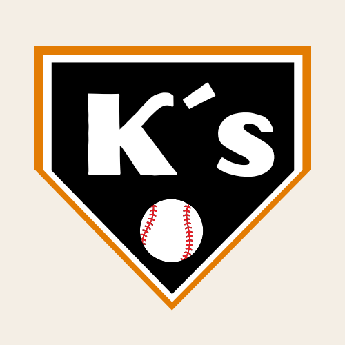
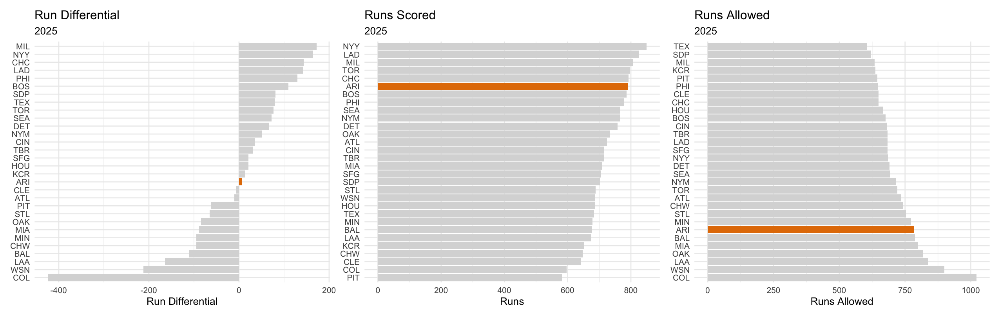
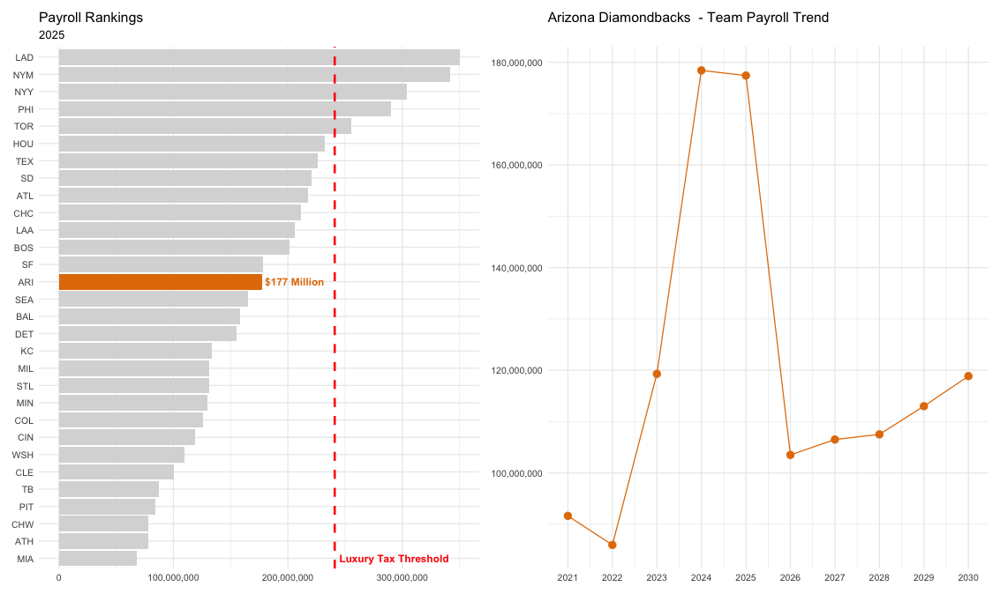

K’s Baseball

Arizona Diamondbacks
Franchise Overview
After falling short of the postseason in 2024, a year removed from their World Series run, the Arizona Diamondbacks entered 2025 determined to contend again—adding former Cy Young winner Corbin Burnes (6 years, $210 million) and All-Star first baseman Josh Naylor in a bold offseason. Despite their aggressive approach, the Diamondbacks finished fourth in the NL West and missed the postseason for the third straight year. As a result, they became sellers at the trade deadline, moving key players such as Eugenio Suárez and Josh Naylor, along with other notable pieces like Jordan Montgomery and longtime frontline starter Merrill Kelly.
The Diamondbacks finished with a +6 run differential, ranking 18th in MLB. Their strong offense powered that result, finishing sixth in baseball in runs scored and second in the NL West behind the division-champion Dodgers. However, run prevention proved to be their biggest issue in 2025, as Arizona ranked 24th in runs allowed.

Pitching Evaluation
Run prevention has been a persistent issue for the Arizona Diamondbacks in recent seasons. They finished 20th in RA in 2023 and slipped to 26th in 2024, a trend made even harder to manage given that Chase Field ranked third in park factor (103) 18th in HR/FB% (19.6) in baseball, reinforcing its reputation as a hitter-friendly environment. Despite the challenges, the staff still received steady production from key arms such as Merrill Kelly, Zac Gallen, Brandon Pfaadt, and more recently Ryne Nelson.
That foundation, however, eroded in 2025. Gallen—Arizona’s most valuable pitcher over the previous three years—took a noticeable step back, posting a 4.83 ERA and 4.50 FIP. His regression, combined with the Diamondbacks’ position in a highly competitive NL West, pushed the team into selling at the trade deadline, including dealing Merrill Kelly despite his strong season. Pfaadt also regressed, with his ERA rising from 4.71 to 5.25, his FIP from 3.60 to 4.22, and his K/9 falling from 9.17 to 7.49, further thinning the rotation’s reliability.
Amid the setbacks, Ryne Nelson emerged as the club’s biggest bright spot, delivering a breakout season with a 3.39 ERA and 3.79 FIP. But even that progress was overshadowed by the team’s most significant blow: top free-agent signing and former Cy Young winner Corbin Burnes underwent Tommy John surgery after just 64 innings, leaving the rotation without its expected ace and amplifying the broader run-prevention struggles the Diamondbacks have faced.
Hitting Evaluation
Hitting has been the strength of the Diamondbacks for the past several years, and in my opinion they have one of the best young position-player cores in baseball. The group is led by one of the most electric players in the sport, Corbin Carroll. He is a complete player who can hit, field, and run at an elite level. In 2025 he finished in the 90th percentile in batting run value, the 86th percentile in fielding, and the 100th percentile in baserunning. He has stolen 30+ bases in each of the last three seasons, hit more than 10 triples per year, and reached 20+ home runs annually, including a career-high 31 in 2025.
Alongside Carroll, the Diamondbacks also have the best second baseman in baseball in Ketel Marte, who finished third in MVP voting. Over the last three seasons, Marte has hit 89 home runs with an .887 OPS. Another key piece of the Diamondbacks’ core is Gabriel Moreno, the right-handed-hitting catcher acquired in the Daulton Varsho trade. He has been highly productive, posting 7.5 WAR over his last three seasons.
The biggest surprise in 2025 was shortstop Geraldo Perdomo. The Dominican switch-hitter had the best season of his career, producing 7.1 bWAR. While he is not a power hitter, he showed excellent plate discipline and strong contact skills, finishing in the 92nd percentile or better in Squared-Up%, Chase%, Whiff%, K%, and BB%. He paired that with 73rd-percentile defense at shortstop, helping him finish fourth in MVP voting.
Farm System Evaluation
MLB currently ranks the Diamondbacks’ farm system 16th overall. According to MLB Pipeline, their top three prospects are outfielders Ryan Waldschmidt, Slade Caldwell, and 2025 first-round pick Kayson Cunningham. The top pitching prospect in the organization is left-hander Kohl Drake, who was acquired from the Texas Rangers in the Merrill Kelly trade. Drake posted a 28.2 K% in 2025 across Double-A and Triple-A. He features a mid-90s fastball and a curveball capable of generating swing-and-miss, and at 25 years old he is close to reaching the major leagues.
Overall, the Diamondbacks’ top 30 prospects are evenly split between pitchers and position players, giving the system a balanced mix of future contributors.
Hitting Prospects
The Diamondbacks have several interesting hitting prospects. Ryan Waldschmidt had a strong season, rising to Double-A and showing well-rounded tools. He posted a .921 OPS with 9 home runs at that level. Jordan Lawlar has been one of their top prospects for the past few years. He dealt with hamstring issues in 2025 and struggled during his 28-game stint in MLB, but he still has the potential to become the long-term answer at third base after the team moved Eugenio Suárez at the trade deadline.
Slade Caldwell offers a profile similar to Corbin Carroll—a left-handed hitter and left-handed outfielder with elite speed and strong defensive ability. He struck out 138 times in 114 games and his game power remains limited right now, but at just 19 years old he has room to grow physically and could develop more impact as he matures.
AJ Vukovich is another notable name and could be a future option at first base. The right-handed-hitting corner infielder hit 22 home runs with an .853 OPS in Triple-A last season.
Pitching Prospects
As I discussed in the pitching overview, the Diamondbacks have received underwhelming production from their major-league pitching staff in recent years, and their farm system is not particularly deep with pitching talent. However, there are still several interesting arms developing in the organization.
Kohl Drake is their top pitching prospect according to MLB Pipeline, but I am especially high on Mitch Bratt. The 21-year-old left-hander posted a 29.3 K% across 122.1 innings in 2025. He throws a five-pitch mix with a low-90s fastball that he locates well, and his control is his strongest trait—he finished the season with a 4.2% walk rate. While he doesn’t possess elite raw stuff, his ability to command his arsenal gives him a high floor as a pitching prospect.
Daniel Eagen is another arm who stood out. The right-hander features a very good curveball that helped him produce a 32.4 K% and a 2.99 ERA across 23 starts (117.1 IP) at two levels. His fastball also has solid velocity, sitting in the mid-90s.
Another notable name is Chung-Hsiang Huang. He doesn’t have an electric fastball, but he possesses strong secondary offerings led by an excellent changeup and a slider that can also generate swing-and-miss. In 2025 he recorded a 28.7 K% with just a 5.5 BB%, showing advanced command for a 19-year-old. If he develops more fastball velocity as he matures, he could end up with a very strong three-pitch mix and above-average strike-throwing ability.
Finally, David Hagman—who also came over in the Merrill Kelly trade—shows intriguing potential as well. He struck out 33% of hitters while walking only 6.1%, suggesting the Diamondbacks may have received a very promising return in that deal.
Payroll Evaluation
The Arizona Diamondbacks ranked in the middle of the league in payroll in 2025, finishing at roughly $177 million. This was very similar to their 2024 payroll and a significant increase from their 2023 World Series season, when they spent just under $120 million. Their postseason run pushed the organization to invest more heavily in order to stay competitive in the tough NL West.
For the 2026 season, they have meaningful money coming off the books. Trading Josh Naylor, Merrill Kelly, and Eugenio Suárez at the deadline removed several pending free agents from their payroll, and with Zac Gallen also set to come off the books, Spotrac projects Arizona’s 2026 payroll to sit under $90 million.
The Diamondbacks have made several strong long-term commitments, particularly with their young core. Corbin Carroll is signed for $111 million over eight years, Geraldo Perdomo for $45 million over four years, and Ketel Marte is in the middle of a six-year, $116 million deal that runs through 2030. Marte’s contract has been one of the best values in baseball—his cost per WAR in 2025 was roughly $3 million, well below the $8 million per WAR typical on the open market.
However, not all of their contracts have performed as hoped. Eduardo Rodríguez signed a four-year, $80 million deal but has delivered just an 85 ERA+ across 200 innings over his first two seasons in Arizona, resulting in a cost of about $15 million per WAR in 2025. The Corbin Burnes contract—$210 million over six years—also carries considerable risk after he underwent Tommy John surgery early in the deal. If he returns in mid-to-late 2026 and regains his pre-injury form, he can still provide strong value, but in 2025 his cost per WAR was an extremely high $44 million.
Aside from those two deals, the Diamondbacks do not have any long-term contracts that threaten to limit their payroll flexibility. With several commitments clearing out and a relatively clean financial outlook, they should have room to spend in 2026 and the years that follow.

Closing Thoughts
In my opinion improving the pitching is the biggest area of opportunity for the Diamondbacks, in 2026 they will not have the contributions of Merril Kelly, Zac Gallen is a free agent and Corbin Burnes is going to be recovering from tommy john surgery,
Free Agent Recomendation